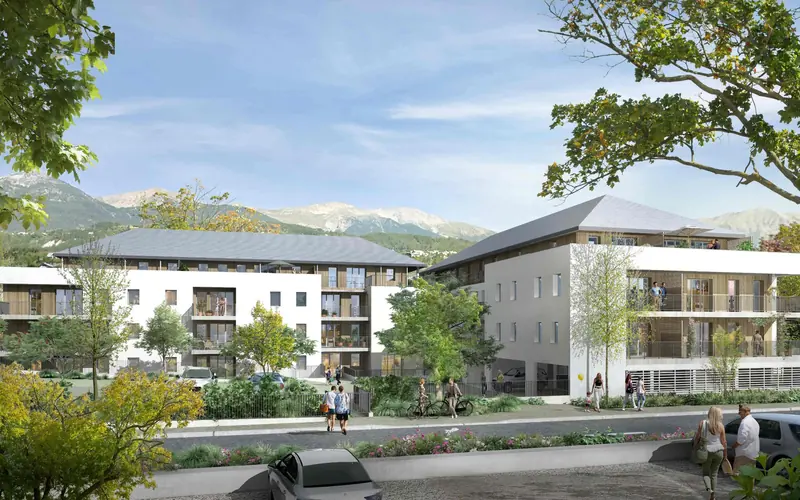
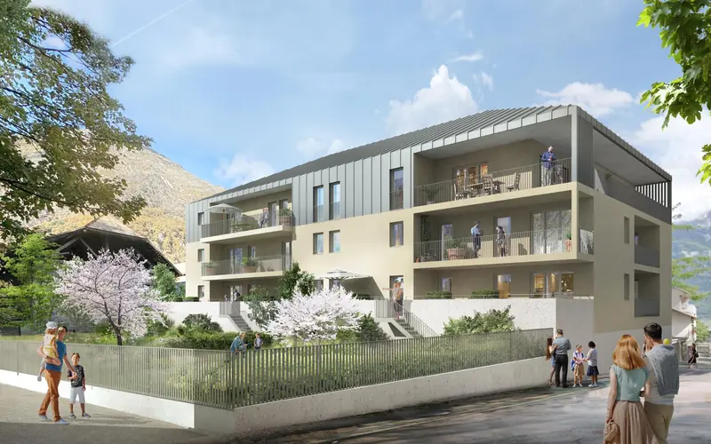
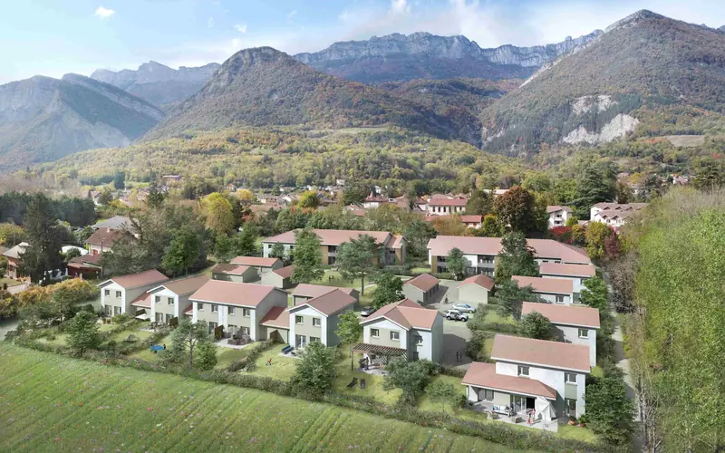
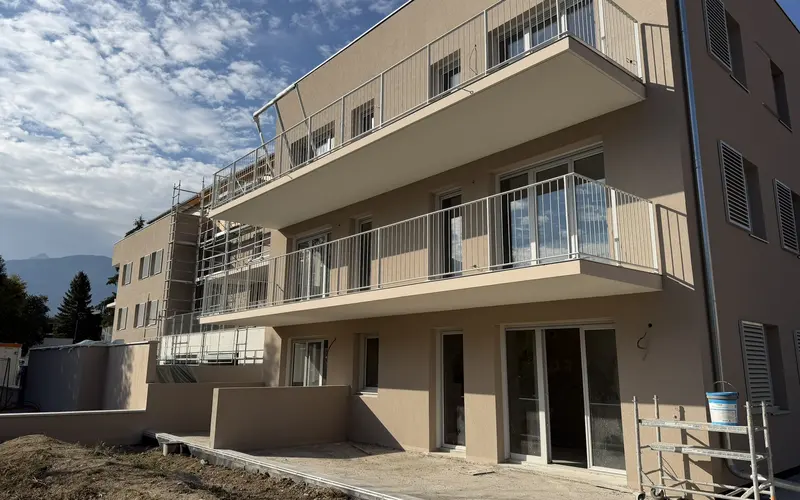
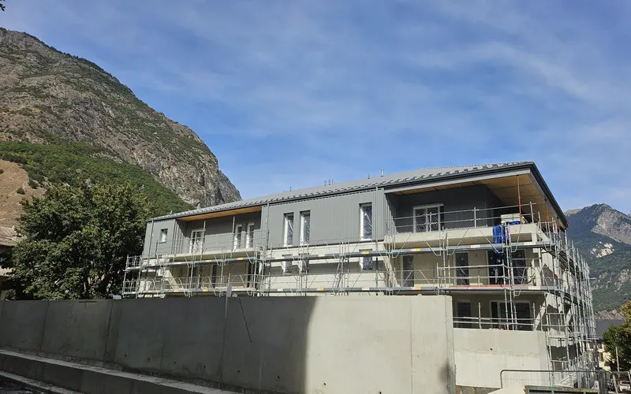
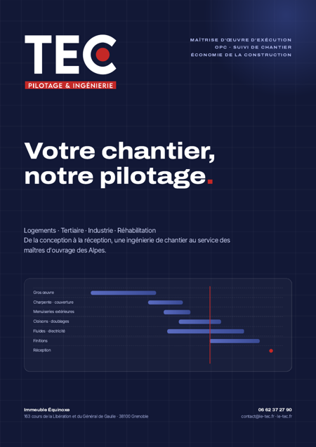

Vos chantiers, pilotés du plan à la réception
TEC assure la maîtrise d'œuvre d'exécution, l'OPC et l'économie de la construction de vos opérations de logements et d'immobilier d'entreprise, en Isère, Savoie, Haute-Savoie et Hautes-Alpes.
- Isère
- Savoie
- Haute-Savoie
- Hautes-Alpes
Une ingénierie de chantier complète, un seul interlocuteur
De la faisabilité à la levée des réserves, nous réunissons les compétences qui font tenir un projet : la conception, l'exécution, le temps et le coût.
Conception architecturale
Faisabilité, esquisses, plans et dossiers d'autorisation, en lien avec l'architecte.
02Maîtrise d'œuvre d'exécution
DCE, marchés, visas EXE, direction de l'exécution des travaux et réception.
03Suivi de chantier
Présence terrain, réunions hebdomadaires, comptes rendus et contrôle qualité.
04OPC — Ordonnancement, pilotage, coordination
Planning tous corps d'état, synchronisation des lots et tenue des délais.
Économie de la construction & AMO
Estimations, CCTP, consultation des entreprises, budget et assistance MOA.
Six étapes, une même exigence de rigueur
Notre force : la continuité. L'équipe qui prépare le dossier de consultation est celle qui pilote le chantier et réceptionne les ouvrages.
Conception
Faisabilité, esquisses, APD, autorisations
Consultation
DCE, CCTP, analyse des offres, marchés
Préparation
Visas EXE, planning TCE, installation de chantier
Exécution
DET, OPC, réunions et comptes rendus hebdomadaires
Réception
OPR, procès-verbaux, levée des réserves, DOE
Après livraison
Parfait achèvement, suivi des garanties
La maîtrise, du premier trait au dernier PV
Un projet de construction se joue rarement sur une grande décision. Il se gagne, ou se perd, sur des centaines de petits arbitrages : une réservation oubliée, un plan d'exécution visé trop tard, une situation validée sans contrôle, une interface entre deux lots que personne n'a anticipée.
TEC est né de cette conviction. Notre métier est d'apporter au maître d'ouvrage la rigueur technique et la lucidité économique qui sécurisent chaque étape : un planning qui fait autorité, des comptes rendus qui engagent, des coûts suivis à l'euro près et une réception préparée dès le premier jour.
Piloter, c'est anticiper. Nous voulons que nos clients n'apprennent jamais une mauvaise nouvelle de chantier trop tard.
Des chantiers pilotés, de la Maurienne à l'Embrunais
Logements collectifs, programmes mixtes, rénovation industrielle et tertiaire : découvrez les opérations que nous pilotons.

En travauxÉlément
44 logements collectifs en accession libre

En travauxLes Jardins de Babylone
17 logements collectifs en accession libre
MTI
Réaménagement d'un bâtiment industriel en site occupé
La rigueur d'un pilote, l'œil d'un économiste
TEC est un bureau d'études spécialisé dans l'exécution et l'économie de la construction. Nous ne concevons pas des chantiers sur le papier : nous les faisons aboutir, au prix et au délai convenus, aux côtés du maître d'ouvrage.
- Une présence terrain hebdomadaire et des comptes rendus qui engagent.
- Un planning tous corps d'état vivant, mis à jour chaque semaine.
- Un contrôle financier rigoureux des situations et des avenants.
- Une connaissance fine des entreprises et des contraintes de montagne.
Nouvelles du terrain
L'avancement de nos chantiers, raconté par ceux qui les pilotent.

Horizon Belledonne : piloter un chantier mixte collectif et maisons
À La Terrasse, le chantier Horizon Belledonne démarre le 4 janvier 2027 : 25 appartements et 10 maisons, dont 30 logements en PSLA avec SOLIHA.
Lire
Élément à Embrun : la dernière ligne droite avant la livraison
Façades, ascenseurs, peintures, espaces verts : point d'avancement du chantier Élément (44 logements, Embrun) au compte rendu n°63.
Lire
Les Jardins de Babylone : hors d'eau, hors d'air, place au second œuvre
Saint-Jean-de-Maurienne : gros œuvre, menuiseries et bardage terminés, cloisons en cours, ascenseur livré en novembre. Point d'étape au CR n°29.
LireCe qui change en 2026
RE2020, facturation électronique, urbanisme, déchets de chantier : notre veille réglementaire, sourcée et décryptée.
REP PMCB : éco-contributions en hausse, refonte en cours
Barèmes relevés au 1er juillet 2026, refondation de la filière, seuil de reprise sans frais des petits volumes : où en est la REP des produits et matériaux de construction ?
LireDPE : coefficient électricité 1,9 puis 1,7
Après l'arrêté du 13 août 2025 (1,9 au 1er janvier 2026), l'arrêté du 19 août 2026 abaisse à 1,7 le facteur de conversion de l'électricité dans le DPE à partir de 2027.
LireFacturation électronique : réception obligatoire au 1er septembre 2026
Réception obligatoire au 1er septembre 2026, émission en 2026 ou 2027 selon la taille : ce que la réforme change pour les situations de travaux, la retenue de garantie et la sous-traitance.
Lire
Nos métiers en quatre pages
Missions, méthode, engagements et références : la plaquette TEC à télécharger et à partager.
Télécharger la plaquette (PDF)Grenoble et l'arc alpin
Depuis notre bureau grenoblois, nous intervenons dans la métropole, le Grésivaudan, l'Oisans, la Maurienne, le Chablais, le Champsaur et l'Embrunais.
Un projet, un chantier à piloter ?
Parlons de votre opération : nous vous répondons sous 48 heures ouvrées avec une proposition de mission adaptée.